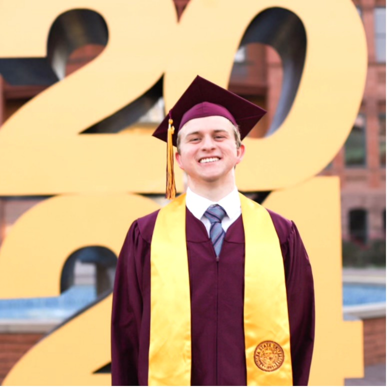

<div class="container">
    <div class="row">
        <!--About Me-->
        <div class="col-lg shadow border m-1">
            <div>
                <h2 class="text-center">About Me</h2>
                
                <p style="text-indent: 3em;" class="text-left">Recent Computer Engineering graduate from the Ira A. Fulton Schools of Engineering at ASU with a strong passion for hardware design and digital systems. I’ve enjoyed designing ripple carry adders and infix-to-postfix stacks using Verilog and developing embedded systems with the FRDM microcontroller.</p>
                <p style="text-indent: 3em;" class="text-left">My undergraduate research focuses on creating an open-source large language model that generates Verilog code, combining my interests in AI and hardware. As a teaching assistant for Data Structures and Algorithms, I collaborated with faculty to develop assignments for 100+ students. I’m eager to learn, innovate, and connect with like-minded professionals!</p>
            </div>
        </div>

        <!-- Featured Project -->
        <div class="col-lg shadow border m-1">
            <h2 class="text-center">Featured Project</h2>
        </div>
    </div>
</div>